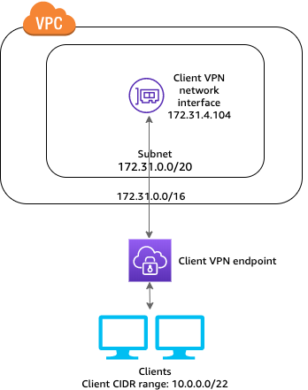
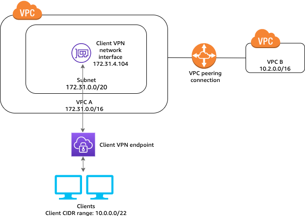
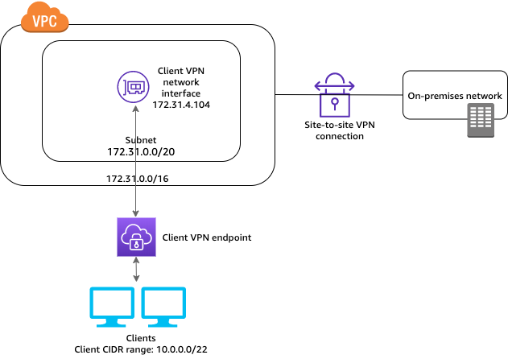
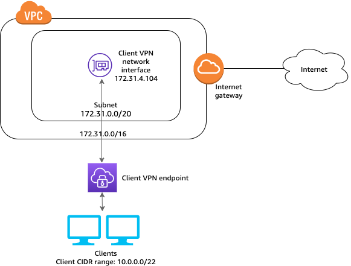

Enterprise Scenarios & Production Use Cases¶
Overview¶
AWS Client VPN scales across diverse enterprise topologies—from single development VPCs to complex multi-account hub-and-spoke networks connected via AWS Transit Gateway and on-premises datacenters.
This chapter details the five essential enterprise architecture patterns, complete with routing matrices, authorization rules, and security controls.
Scenario 1: Secure Access to a Single VPC Workload Tier¶
The foundational deployment pattern provides remote engineers direct, encrypted access to workloads in a single private VPC without exposing public bastion jump hosts.

Architecture Highlights¶
- Endpoint Association: Associated with private subnets across two Availability Zones (
us-east-1aandus-east-1b) for high availability. - Split Tunnel: Enabled. Only packets destined for the VPC CIDR (
10.0.0.0/16) route through the VPN tunnel. - DNS Resolution: The AmazonProvidedDNS (
10.0.0.2) resolves Route 53 Private Hosted Zones (*.internal.mycorp).
Configuration Matrix¶
| Layer | Configuration Item | Value |
|---|---|---|
| Client VPN Route Table | Destination CIDR | 10.0.0.0/16 targeting Associated Subnet |
| Client VPN Authorization | Destination CIDR | 10.0.0.0/16 granted to EngineeringGroup |
| VPC Route Table | Local Route | 10.0.0.0/16 to local |
| Workload Security Group | Inbound HTTPS / SSH | Ingress allowed from sg-client-vpn (Security Group Chaining) |
Scenario 2: Multi-VPC Access via VPC Peering & Transit Gateway¶
Enterprises managing multi-account AWS environments often establish a central Shared Services / Ingress VPC housing the Client VPN endpoint, granting access to workloads in peered Production and Staging VPCs.

The Routing Requirement¶
AWS VPC Peering does not support edge-to-edge transitive routing by default. To route client traffic through the Associated Subnet to a peered VPC (10.1.0.0/16):
- The Client VPN Endpoint Route Table must have an explicit route for
10.1.0.0/16. - The VPC Route Table of the associated subnet must route
10.1.0.0/16to the Peering Connection ID (pcx-xxxx) or Transit Gateway (tgw-xxxx). - An Authorization Rule must grant clients permission to
10.1.0.0/16.
Configuration Matrix¶
| Route Table | Destination CIDR | Target Gateway | Purpose |
|---|---|---|---|
| Client VPN Route Table | 10.0.0.0/16 |
Associated Subnet | Local Ingress VPC routing |
| Client VPN Route Table | 10.1.0.0/16 |
Associated Subnet | Peered Workload VPC routing |
| Associated Subnet VPC RT | 10.1.0.0/16 |
pcx-0123456789abcdef0 |
Forwards traffic across VPC peer |
| Peered Subnet VPC RT | 10.0.0.0/16 |
pcx-0123456789abcdef0 |
Returns traffic back to Ingress VPC ENI |
Scenario 3: Hybrid Cloud Connectivity (On-Premises Data Center)¶
Remote engineers frequently require simultaneous access to both AWS cloud workloads and legacy on-premises datacenters over a single VPN connection.

Architecture Highlights¶
- The Ingress VPC is connected to the on-premises datacenter via an AWS Direct Connect (DX) private virtual interface or an AWS Site-to-Site VPN connection terminating on a Virtual Private Gateway (VGW) or Transit Gateway (TGW).
- Client traffic destined for
192.168.0.0/16(on-prem) enters the Client VPN endpoint, undergoes SNAT at the Subnet ENI, and forwards across the Direct Connect / Site-to-Site tunnel.
Configuration Matrix¶
| Route Layer | Destination CIDR | Target Gateway | Notes |
|---|---|---|---|
| Client VPN Route | 192.168.0.0/16 |
Associated Subnet | Directs on-premises traffic to the association |
| VPC Route Table | 192.168.0.0/16 |
vgw-0123456789 or tgw-0123456789 |
Traverses hybrid cloud link |
| On-Premises Firewall | 10.0.10.0/28 (VPN Subnet) |
Inbound DX Gateway | Must allow return traffic to the VPN subnet ENI |
Scenario 4: Secure Internet Egress via Centralized NAT Gateway / Firewall¶
In strict compliance environments (financial services, healthcare), organizations mandate that all remote client internet traffic be inspected, logged, and filtered through centralized egress inspection proxies or the AWS Network Firewall.

Architecture Highlights¶
- Split Tunneling is Disabled: Forces all client traffic (
0.0.0.0/0) into the Client VPN tunnel. - Traffic egresses the Client VPN ENI into a private subnet, whose route table points
0.0.0.0/0to an AWS NAT Gateway in a public subnet. - Public web servers receive traffic originating from the Elastic IP of the NAT Gateway, masking user home IPs and enabling IP-whitelisting on third-party SaaS platforms.
Configuration Matrix¶
| Component | Setting | Value |
|---|---|---|
| Client VPN Endpoint | Split Tunnel | Disabled (Full Tunnel Mode) |
| Client VPN Route Table | Destination | 0.0.0.0/0 targeting Associated Subnet |
| Authorization Rule | Destination | 0.0.0.0/0 granted to all clients or specific groups |
| Associated Subnet Route Table | 0.0.0.0/0 |
Targets NAT Gateway (nat-0123456789) |
Scenario 5: Group-Based Micro-Segmentation (Dev vs. Prod)¶
A single Client VPN endpoint can securely serve multiple departments with strict micro-segmentation, eliminating the cost of running separate endpoints for dev, staging, and prod:
flowchart LR
DevUser["Developer<br/>(Group: DevTeam)"] --> Endpoint["Client VPN Endpoint<br/>(Single Shared Endpoint)"]
AdminUser["Security Admin<br/>(Group: SecAdmins)"] --> Endpoint
Endpoint --> RuleDev{"Auth Rule: DevTeam"}
Endpoint --> RuleProd{"Auth Rule: SecAdmins"}
RuleDev -->|ALLOWED| DevVPC["Development VPC Subnet<br/>(10.0.1.0/24)"]
RuleDev -.->|BLOCKED| ProdVPC["Production VPC Subnet<br/>(10.0.2.0/24)"]
RuleProd -->|ALLOWED| DevVPC
RuleProd -->|ALLOWED| ProdVPCAuthorization Rules Matrix¶
- Rule 1: Destination
10.0.1.0/24to Authorized Group:DevTeam - Rule 2: Destination
10.0.2.0/24to Authorized Group:SecAdmins - Rule 3: Destination
10.0.200.0/24(Corporate Docs) to Authorized Group:*(All Users)